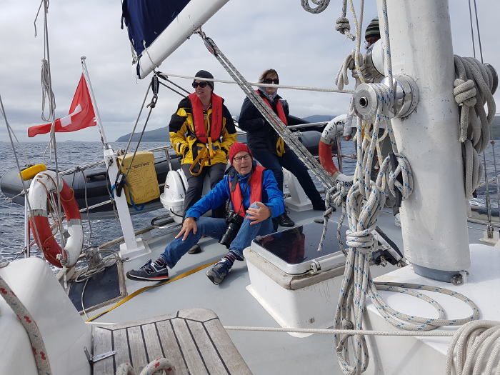

ORA MARITMA Association offers its associates cruises on the comfortable sea going yacht Corryvreckan in small groups. At present the yacht is cruising on the west coast of Scotland. Its sheltered lochs and remote islands allow visits to places largely untouched by man. Enjoy being a member of the crew helping in running the yacht and discover nature from the sea with a sense of adventure.

One of the may themes to follow when discovering these places is the book of Samuel Johnson and James Boswell "A Journey to the Western Islands of Scotland
and The Journal of a Tour to the Hebrides"
Mitglied werden

Anmeldeunterlagen
